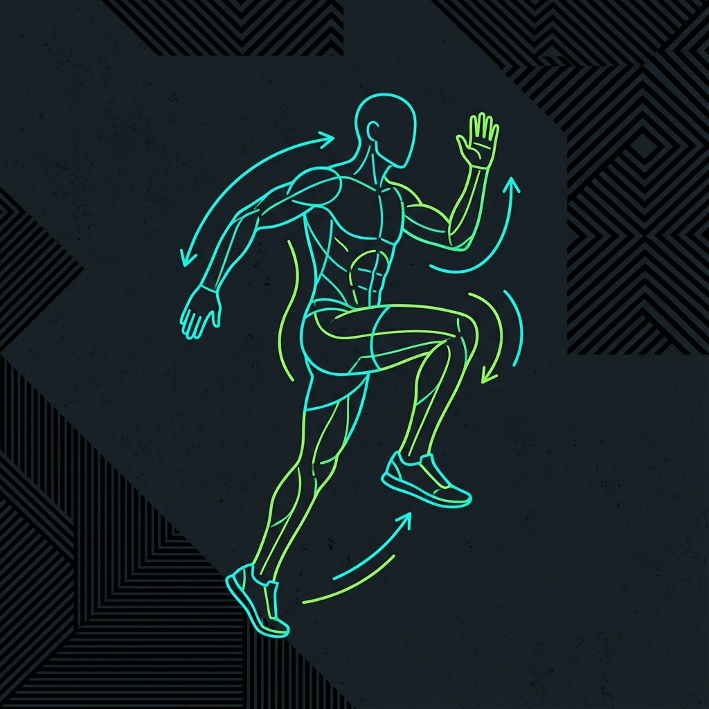
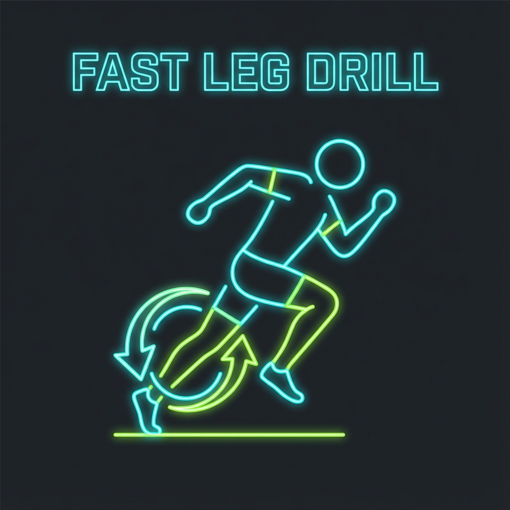
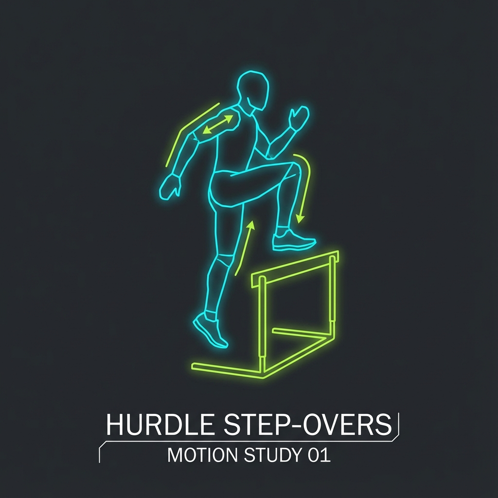
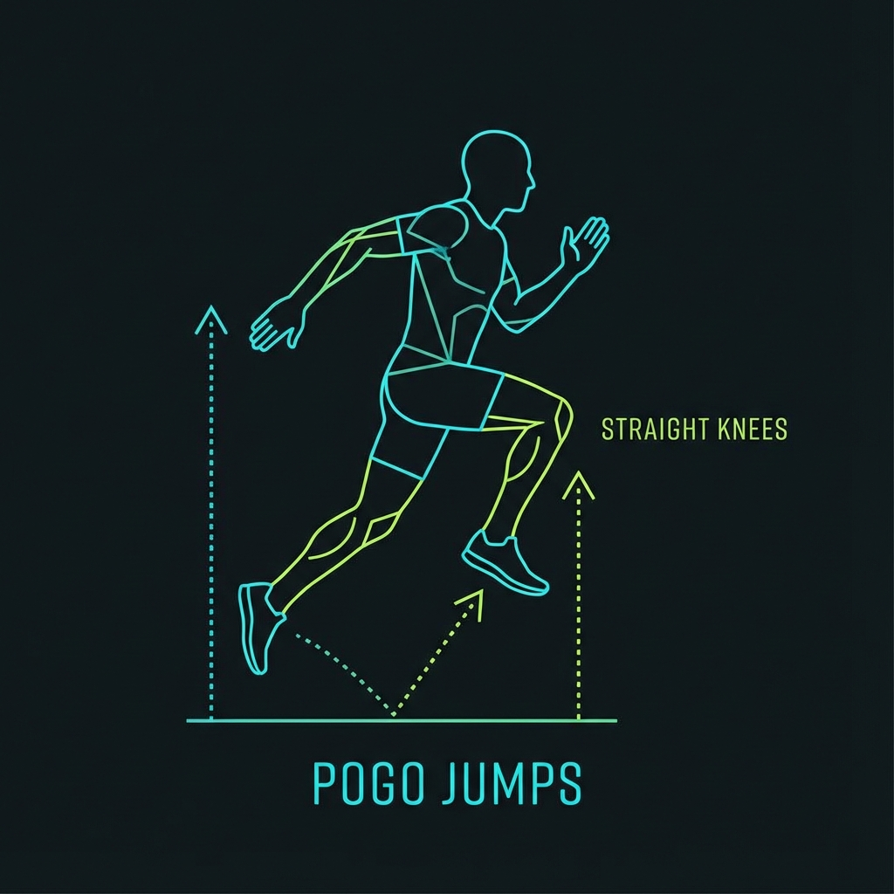
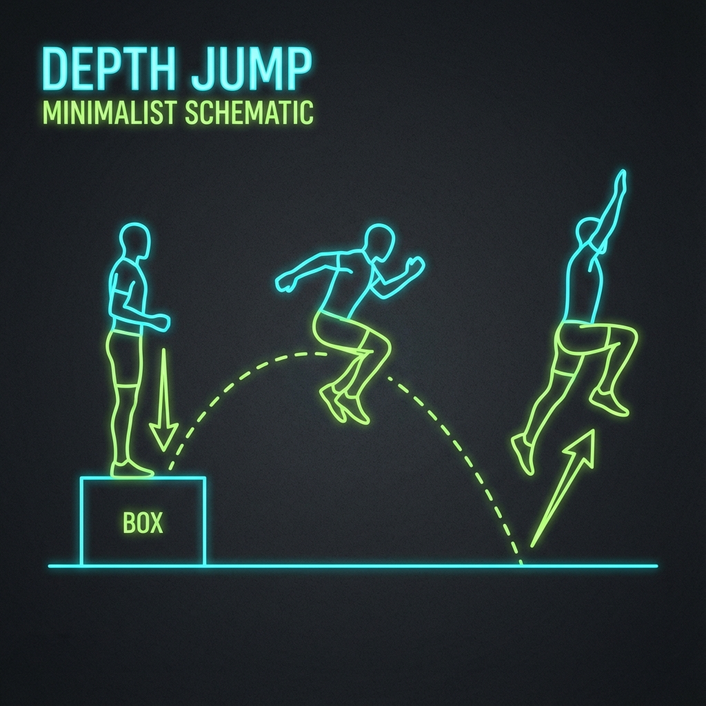
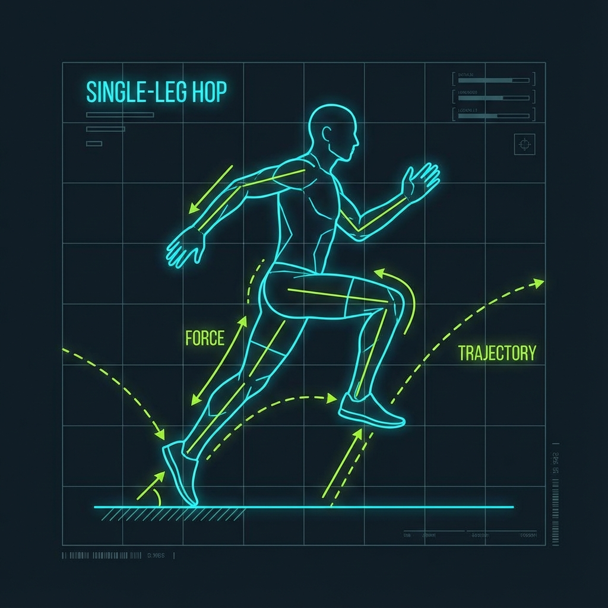
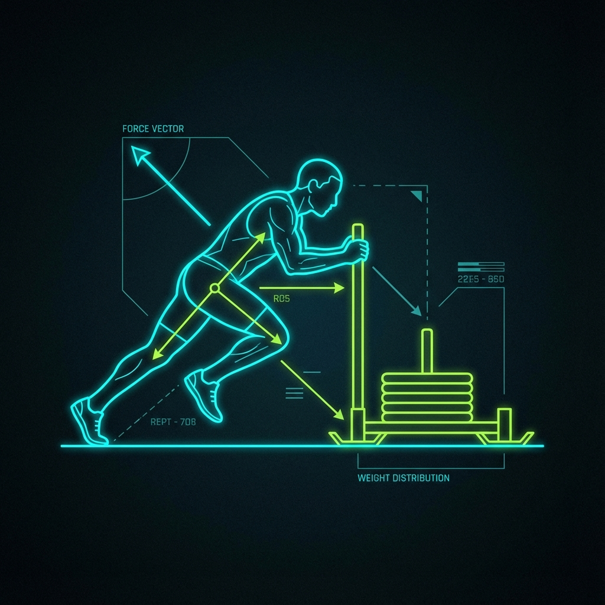

究極のスピードを追求する。
遊脚（浮いている足）と支持脚（地面についている足）を素早く入れ替える動作。空中で足を前後に素早く交差させることで、地面への強いインパクトを生み出します。

リズムよく膝を高く上げ、真下に踏み下ろすドリル。足の入れ替えのタイミングを意識します。

片足だけ素早く回転させるドリル。地面を引っ掻くのではなく、上から叩くイメージで。

ハードルをまたぐ動作で、股関節の可動域と高い膝の位置をキープする筋力を養います。
接地瞬間に足首を固定し、バネのようにエネルギーを反発させる能力。つま先を上げた状態（背屈）を保つことが重要です。

膝を曲げずに足首のバネだけで連続ジャンプ。接地時間を極限まで短くします。

台から降りて着地した瞬間にジャンプ。衝撃を受け止め、即座に跳ね返すプライオメトリクス。

片足での連続ジャンプ。左右差をなくし、片足で体重を支える剛性を高めます。
お尻の筋肉を使って脚を後方に力強く押し出す動作。これが推進力の源となります。

重りを押すことで、前傾姿勢を保ちながら股関節を最大伸展させる感覚を強化します。
大股で跳ねるように走るドリル。滞空時間を長くし、一歩一歩の出力を最大化します。
仰向けで片足でお尻を持ち上げる。大臀筋の収縮を意識し、走りのアクセルを強化します。